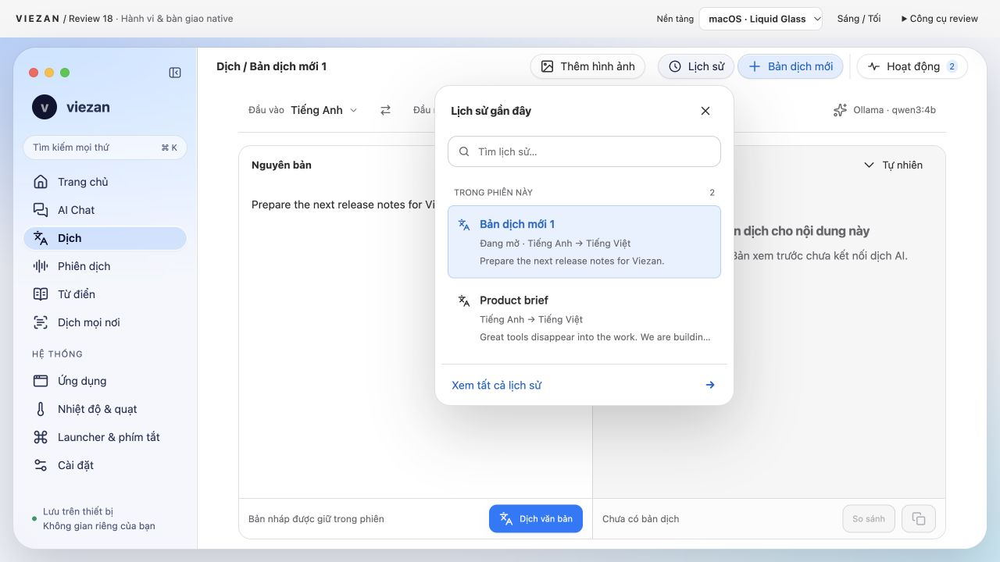
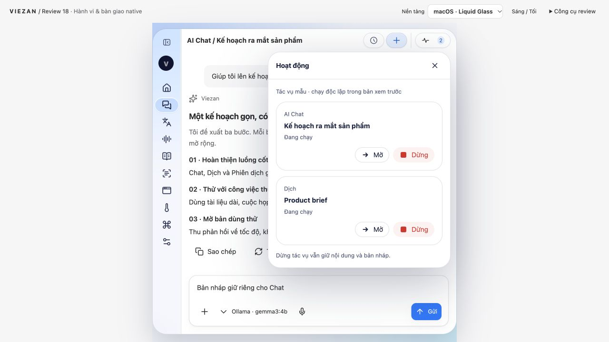
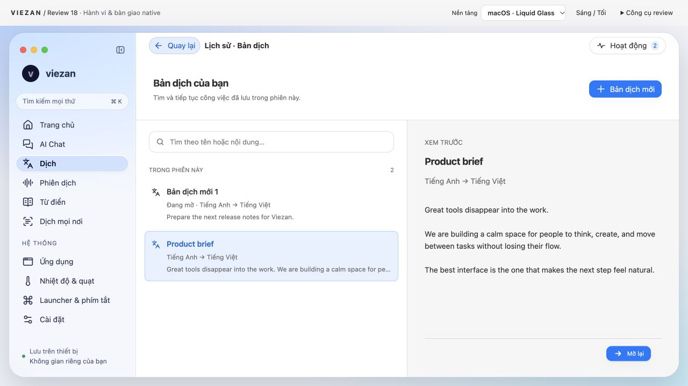
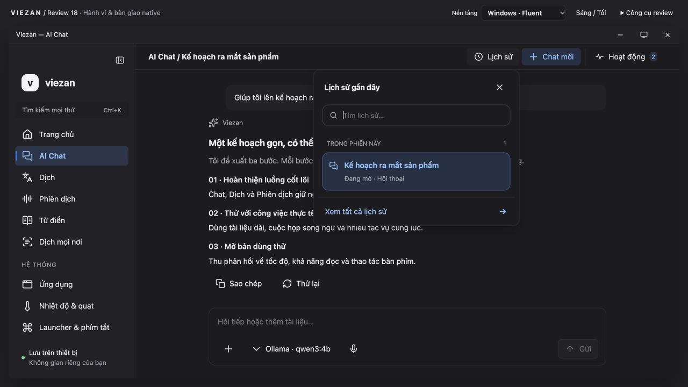
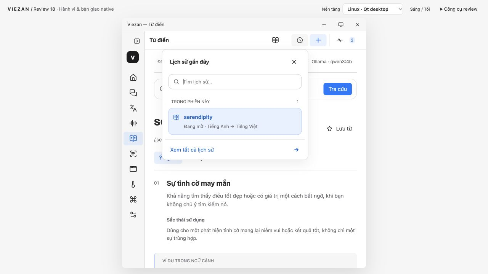

Review 18 · Từ bố cục đến hành vi
Lịch sử nhất quán, tác vụ độc lập và trạng thái được giữ khi chuyển việc. Bản thiết kế để review và chuẩn bị lát cắt native đầu tiên.
Claude Fable 5.1 chưa review thành công do lỗi xác thực. Các sửa đổi dưới đây đến từ audit source và thao tác trực tiếp trên prototype. Windows/Linux là bản mô phỏng trong browser; chưa phải runtime native.
Những thay đổi có thể kiểm tra
- Model và bản nháp riêng cho từng phiên/tính năng.
- Lịch sử nhanh mở ngay dưới nút; thư viện đầy đủ chỉ mở qua “Xem tất cả”.
- Hoạt động nằm gọn trong khung 640; cả Chat và Dịch đều có Mở, Dừng, Thử lại.
- Đổi đầu vào không còn giữ kết quả mẫu sai ngữ cảnh; nút bị vô hiệu khi chưa có bản dịch.
- Nút thu nhỏ vẫn có tên truy cập; tìm không dấu, mũi tên, Enter và Escape hoạt động.





Bắt đầu implement theo lát cắt
SwiftUI + AppKit cho macOS; Qt Quick với adapter riêng cho Windows/Linux. Dùng chung hợp đồng Session/Task/Attempt, giữ phần đọc và soạn thảo có nền đặc. Không port chuỗi override JavaScript của prototype vào production.
- Chốt fixture và state machine cho draft, model, cancel, retry.
- Shell + Chat/Dịch + lịch sử/Hoạt động trên macOS.
- Cùng fixture trên Windows/Linux thật; kiểm tra DPI, IME, accessibility và Wayland.
- Một provider thật, storage/recovery; sau đó mở rộng các module và tích hợp OS.
Đặc tả đầy đủ nằm trong repository: docs/migration/review18-handoff.md. Chưa thay Electron cho đến khi review thiết kế và các cổng runtime được nghiệm thu.
Đã kiểm tra syntax, Biome cho 7 JS sửa, Atomic/Design và documentation checks. Cần Fable review, nghiệm thu của bạn và runtime QA trên từng OS trước khi thay Electron.